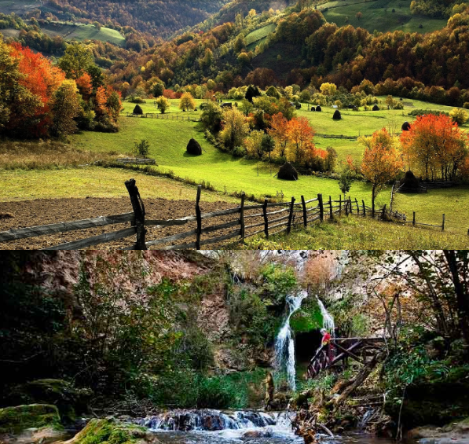

Stevan St. Mokranjac: Druga Rukovet
Stevan St. Mokranjac: Deuxième Guirlande
"Iz moje domovine" - "De mon pays natal"

ÐеÑзаж ШÑмадиÑje
Paysage de Choumadiya
|
|
Veze ka pesmama 1 - 5 -oOo- Liens vers les chants 1 - 5

Druga Rukovet
Izvodi Hor RTV-a Beograd. Dirigent: Mladen Jagušt (maj 1981)
Choeur de Radio-télévision Belgrade dir. par Mladen Jagušt (mai 19821)
NOTE
|
ÐÑÑга Ð ÑÐºÐ¾Ð²ÐµÑ Ð½Ð¾Ñи назив âÐз моÑе домовинеâ и опиÑÑÑе пеÑзаж ШÑмадиÑе. ÐапиÑана Ñе 1884. године. Ðедна од наÑкÑаÑÐ¸Ñ , ова ÑÑÐºÐ¾Ð²ÐµÑ Ñе ÑаÑÑоÑи из Ð¿ÐµÑ Ð½Ð°ÑÐ¾Ð´Ð½Ð¸Ñ Ð¼ÐµÐ»Ð¾Ð´Ð¸Ñа. ÐаÑим Ñледи баÑиÑон Ñоло âÐаÑо РеÑавкиÑоâ. Рза кÑÐ°Ñ ÑаÑива пеÑма âУ ÐÑÐ´Ð¸Ð¼Ñ Ð³ÑадÑâ. Ð¢ÐµÑ Ð½Ð¸ÐºÐ° повезиваÑа Ñ Ð¾Ð²Ð¾Ñ ÑÑковеÑи Ñе по пÑинÑÐ¸Ð¿Ñ ÐºÐ¾Ð½ÑÑаÑÑа. Темпо Ñе наизмениÑно меÑа â Ñ ÑÐµÐ´Ð½Ð¾Ñ Ð½Ð°ÑÐ¾Ð´Ð½Ð¾Ñ Ð¼ÐµÐ»Ð¾Ð´Ð¸Ñи Ñе ÑпоÑ, док Ñе Ñ Ð´ÑÑÐ³Ð¾Ñ Ð±Ñз. ÐÑÑи Ñе ÑлÑÑÐ°Ñ Ð¸ Ñа каÑакÑеÑом мелодиÑа â Ñ ÑÐµÐ´Ð½Ð¾Ñ Ñе ÑаÑив, а Ñ Ð´ÑÑÐ³Ð¾Ñ Ð»Ð¸ÑÑки. ÐÐ¾Ñ ÐµÑенÑноÑÑ Ñелине поÑива на Ñеном ÑонÑком ÑединÑÑвÑ: Ñамо Ф-дÑÑ Ð¸ Ф-мол. Izvor: блог ÑÑиÑеÑиÑе ÐаÑаÑе и Ðикипедиjа |
La 2ème "Rukovet", également sous-titrée "De ma patrie", décrit la région de Å umadija. Elle fut composée en 1884. C'est 'une des plus courtes et elle ne comprend que 5 mélodies populaires: âOsu se nebo zvezdamaâ, âSmilj Smiljanaâ et âJesam li ti, Jelaneâ. Puis vient le solo de baryton âMaro Resavkinjoâ et, pour terminer, le chant humoristique âU Budimu graduâ. Le principe qui préside à l''assemblage de cette guirlande est celui du contraste: le tempo change d'un chant à l'autre - un air populaire lent alterne avec un air endiablé. Il en va de même pour les paroles - les unes sont humoristiques et les autres lyriques. La cohérence de l'ensemble repose sur son unité tonale: fa majeur et fa mineur exclusivement. Source: blog de Natacha, l'enseignante et Wikipédia |